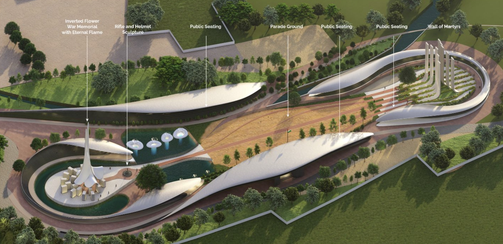

Manas Bhatia
Table of Contents
1 – Systems
DIGITAL WORFLOWS OF ARCHITECTS
Investigating the system of the digital design process in order to optimize it
What is the system?
The digital workflows of architects represent a complex system composed of interconnected elements aimed at enhancing design efficiency and producing superior built environments. This system integrates human and non-human components, including architects, software, simulations, hardware, computing power, generative AI, BIM, and computational design.
The elements within this system encompass various design processes and tools that collectively enhance productivity. The function of non-human elements is to streamline design efficiency, while the purpose of the human system, namely the architects, is to create better and more sustainable built spaces.
Feedback loops are crucial in this system. A reinforcing feedback loop amplifies productivity: as better tools and technologies lead to greater efficiency, they encourage further adoption of advanced solutions. The improved built environment enhances architects' productivity, creating a balancing feedback loop. Additionally, the better the design software and tools, the higher the productivity, establishing another reinforcing feedback loop.
Stocks, in this context, refer to the accumulated resources such as the overall design efficiency and productivity. Inflows include elements like design software, tools, and client-set design briefs. These inputs help architects create and refine their designs. The outflows consist of the drawings and plans that guide the execution of built spaces. As the inflows improve with better tools and clearer briefs, the outflows become more efficient and accurate, leading to higher productivity and better-designed environments.
Whom does it impact?
The digital workflows of architects impact a diverse range of stakeholders, including clients who drive project requirements and provide feedback, and architects who use these workflows to develop and present designs. Design tool developers influence the efficiency and quality of these processes, while project managers and contractors rely on accurate information for timely and budget-compliant execution. Consultants provide specialized expertise, ensuring structural integrity and regulatory compliance. Government and regulatory bodies enforce adherence to building codes and standards. End-users, who ultimately inhabit the built environment, are affected by the design's quality and functionality. Additionally, the local community experiences broader impacts, such as aesthetic and environmental effects, while investors seek assurances of project feasibility and returns. Understanding these stakeholders' roles and needs is crucial for optimizing digital workflows to ensure efficient, collaborative, and successful project outcomes.
"From digital flows to crafted space, efficiency and vision interlace..."
What are its leverage points?
Optimizing the integration of generative AI, for instance, can drastically reduce the time required for initial design phases, allowing architects to handle more projects simultaneously. This optimization removes redundancies, accelerating the workflow and boosting productivity.
2 – Systems
Authorship in Digital Workflows of Architects
In the chosen system of the digital workflows of architects, there are various stakeholders who interact with different levels of expertise:
Clients:
Have authorship over project requirements and final approvals. As non-technical stakeholders, they need tools that are intuitive and flexible, allowing them to articulate needs and understand design concepts. For example, while architects can lock-in massing options, clients should control the architectural style and look-and-feel. They should have the ability to provide feedback throughout the design process, ensuring their vision is realized.
Architects:
Have authorship over creative designs, needing a balance of lock-in and flexibility. Lock-in ensures consistency and streamlines repetitive tasks, while flexibility allows creative exploration and customization. Design tools should offer standardized workflows for efficiency and interoperability, yet allow customization for unique project requirements. Architects should be credited for their creative input, which combines personal expertise with digital tools. They must ensure their designs are original, comply with regulations, and ethically incorporate AI-generated elements.
Project Managers & Contractors:
Require lock-in for compliance and efficient project management but need flexibility for on-site variations and unexpected challenges. They have authorship over project timelines, execution, and handling labor, ensuring the project is built according to drawings and specifications while maintaining flexibility with timelines.
Consultants (Engineers, etc.):
Benefit from standardized data formats for seamless integration and file sharing but need flexibility to apply their specialized knowledge. They have authorship over their specific fields, like landscape planning or structural design, which they lock in for the project. However, other project aspects are locked in for them, with limited flexibility. Architects may overrule their decisions, requiring them to adjust proposals to fit the overall project concept.
Government & Regulatory Bodies:
Require strict lock-in to ensure adherence to standards and regulations. In that sense they have the greatest authorship over the built spaces but cannot take credit for the creative expression of the project.
Software Developers:
Control the technical framework, ensuring it meets industry standards and user needs while being adaptable to new innovations. They must be recognized for encoding rules and functionalities that enable architects to perform their tasks efficiently. Developers create the framework within which users operate and are responsible for making transparent and ethical tools, ensuring users understand the tool’s capabilities and limitations. The tool itself should not have copyright over the produced work, which should belong to the architect using the tool. However, developers should receive credit through licensing agreements. For AI tools, credit should be given to the architects whose works were referenced or used to train the AI models.
In lieu of this investigation, here are three tools/products that showcase different levels of authorship in this system:
1. MidJourney (AI Image Generation): MidJourney generates photorealistic images from text prompts using extensive datasets. It allows architects to rapidly iterate and explore design ideas and enables clients to express their requirements visually without technical skills. This aligns with my philosophy of empowering architects and clients.
2. Rhino 3D (Computational Design): Rhino 3D is a versatile modeling tool supporting both precise technical and freeform organic shapes. Integrating with Grasshopper, it enhances computational design capabilities. Its balance of lock-in and flexibility allows detailed modeling and creative exploration, crucial for innovative architectural solutions.
3. LookX (AI Rendering) vs. Lumion: LookX quickly generates detailed visualizations from basic massing models, facilitating early client involvement and reducing late-stage revisions. Unlike Lumion, it allows clients to have authorship over renders, enhancing satisfaction and engagement. It ensures compliance with fixed massing according to FAR regulations while maintaining creative flexibility.
Final thoughts
Incorporating these tools into my practice will streamline the design process, reduce redundancies, and enhance client satisfaction. Leveraging each tool's strengths will maintain high creativity and flexibility while ensuring efficient project delivery and client engagement.